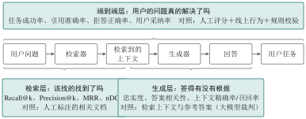

5.7 RAG 评估：怎么知道它靠不靠谱
RAG 系统出错时往往看不出来：检索错了，模型照样能写出通顺的段落；附了引用，引的可能是另一份文件；答案对了，也可能只是碰巧。怎样把“感觉不太对”变成可以定位、可以比较的数字？本节把评估分为检索层、生成层和端到端三层，分别给出指标的定义与算法，并介绍 RAGAs 评估框架和评估集的构建方法。结论是：三层要分开评估，否则检索与生成会互相“甩锅”；评估集必须来自真实问题，并包含“无答案”和“时效敏感”的题目。
为什么要分三层？检索没找到，生成再强也没用；检索找到了，生成可能读错；两层都对，用户体验仍可能很差。只看最终答案对不对，无法知道问题出在哪一环。图 5-6 给出三层各自看什么、对照什么。

图 5-6 RAG 评估的三层。检索层只看检索器的输出，生成层看回答与上下文、问题的关系，端到端层看用户任务是否完成；三层分别评估，才能把一次失败定位到具体环节
5.7.1 检索层：该找的找到了吗
对一个查询，记人工标注的相关文档集合为 \(\mathcal{G}\)，检索返回的前 \(k\) 个结果为 \(\mathcal{R}_k\)。
召回率（Recall@\(k\)）回答“有没有漏”：所有相关文档中，有多大比例出现在前 \(k\) 个结果里。精确率（Precision@\(k\)）回答“有没有凑数”：前 \(k\) 个结果中，有多大比例是相关的。 \[\mathrm{Recall@}k = \frac{\lvert\mathcal{G}\cap\mathcal{R}_k\rvert}{\lvert\mathcal{G}\rvert},\qquad \mathrm{Precision@}k = \frac{\lvert\mathcal{G}\cap\mathcal{R}_k\rvert}{k}. \tag{5-5}\]
这两个指标只看“在不在前 \(k\) 个里”，不管排在第几。而模型最终主要看前几个块，第一个正确结果排在第 1 位还是第 5 位差别很大，因此还需要考虑排序的指标。平均倒数排名（Mean Reciprocal Rank，MRR）看第一个相关结果排得多靠前：设查询集合为 \(\mathcal{Q}\)，查询 \(i\) 的第一个相关结果排在第 \(\mathrm{rank}_i\) 位（前 \(k\) 个里没有相关结果时倒数记 0）， \[\mathrm{MRR} = \frac{1}{\lvert\mathcal{Q}\rvert}\sum_{i=1}^{\lvert\mathcal{Q}\rvert}\frac{1}{\mathrm{rank}_i}. \tag{5-6}\] 归一化折损累计增益（normalized Discounted Cumulative Gain，nDCG）评价整个排序：第 \(i\) 位结果的相关度 \(g_i\)（二值标注时相关为 1、不相关为 0，也可以分级）要按位置打折，越靠后折扣越大， \[\mathrm{DCG@}k = \sum_{i=1}^{k}\frac{g_i}{\log_2(i+1)},\qquad \mathrm{nDCG@}k = \frac{\mathrm{DCG@}k}{\mathrm{IDCG@}k}, \tag{5-7}\] 其中 \(\mathrm{IDCG@}k\) 是把相关文档按理想顺序排在最前面时的 DCG，用来把结果归一化到 0～1。
例 5-5 计算检索指标
对三个测试问题各取前 5 个检索结果（\(k=5\)），相关文档和检索结果如下（“×”表示不相关的文档）： Q1 相关文档为 {A, B, C}，返回 A、×、B、×、×； Q2 相关文档为 {D}，返回 ×、×、D、×、×； Q3 相关文档为 {E, F}，返回的 5 个全不相关。 求平均 Recall@5、平均 Precision@5、MRR，以及 Q1 的 nDCG@5。
| 步骤 | 算什么 | 算式 | 结果 | 这个数从哪来 |
|---|---|---|---|---|
| 1 | 三个问题的 Recall@5 | \(2\div3\)；\(1\div1\)；\(0\div2\) | 0.667；1；0 | Q1 命中 A、B；Q2 命中 D；Q3 无命中 |
| 2 | 平均 Recall@5 | \((0.667+1+0)\div3\) | 0.556 | 步骤 1 |
| 3 | 三个问题的 Precision@5 | \(2\div5\)；\(1\div5\)；\(0\div5\) | 0.4；0.2；0 | 命中数除以 \(k\) |
| 4 | 平均 Precision@5 | \((0.4+0.2+0)\div3\) | 0.2 | 步骤 3 |
| 5 | 各问题倒数排名 | \(1\div1\)；\(1\div3\)；0 | 1；0.333；0 | 第一个相关结果的名次 |
| 6 | MRR | \((1+0.333+0)\div3\) | 0.444 | 式 （5-6） |
| 7 | Q1 的 DCG@5 | \(1\div\log_2 2+1\div\log_2 4\) | 1.5 | 第 1、3 位相关 |
| 8 | Q1 的 IDCG@5 | \(1\div\log_2 2+1\div\log_2 3\) \(+\,1\div\log_2 4\) | 2.131 | 3 个相关文档排在前 3 位 |
| 9 | Q1 的 nDCG@5 | \(1.5\div2.131\) | 0.704 | 式 （5-7） |
数据流向：逐问题统计命中数与名次 → 各问题指标 → 求平均。Q2 的 Recall@5 为 1，但相关文档排在第 3 位，MRR 只给它 1/3，说明“找到了”和“排得好”是两回事；Q3 全部漏检，应优先排查它属于哪类失败（词汇鸿沟？切分把答案切碎了？）。
检索评估最费力的是标注相关文档。一种可行的办法是“合成＋人工校验”：从知识库中抽取段落，让大模型据此反向生成问题，再由人工剔除不合格的；另一种是从真实用户日志中抽样，人工标注意图和相关文档。前者便宜，后者真实，最好兼用。
5.7.2 生成层：答得有没有根据
生成层最核心的指标是忠实度（faithfulness）：回答中的每个论断能否在检索到的上下文中找到依据。计算时先把回答拆成若干条独立论断，记全部论断数为 \(\lvert S\rvert\)，其中能被上下文支持的条数为 \(\lvert S_{\mathrm{sup}}\rvert\)，则忠实度为 \(\lvert S_{\mathrm{sup}}\rvert/\lvert S\rvert\)。论断的拆分和“是否被支持”的判断通常都交给一个裁判大模型完成，而不是确定性的算法。注意，它衡量的不是“对不对”，而是“有没有超出材料”：一个事实上正确但材料里没有的论断，在 RAG 的语境里仍算不忠实，因为用户无法核对。第二个指标是答案相关性（answer relevance）：回答是否正面回应了问题。用户问“能不能退”，回答却讲了一通退换货政策的沿革，相关性就低。
RAGAs（Retrieval Augmented Generation Assessment）[25]是这一层最常用的开源评估框架。它倡导指标驱动开发（Metrics-Driven Development，MDD）：持续监控一组关键指标，用数字而不是感觉判断每次改动是否带来提升。框架有三个基本组件：提示对象定义交给裁判模型的提示词结构与内容；评估样本是一条独立的数据，包含用户问题、系统回答、检索上下文以及参考答案；评估数据集是一组评估样本，用来系统地计算各项指标。常用指标见表 5-11。
表 5-11 RAGAs 的常用指标
| 指标 | 比较对象 | 计算思路 |
|---|---|---|
| 忠实度 | 回答 — 上下文 | 回答拆成论断，计算被上下文支持的论断占比 |
| 答案相关性 | 回答 — 问题 | 由回答反向生成若干问题，计算它们与原问题的嵌入相似度均值 |
| 上下文精确率 | 上下文 — 参考答案 | 由裁判模型判断每个上下文块是否含有参考答案所需信息，再看这些相关块是否排在前面（按名次加权的精确率） |
| 上下文召回率 | 上下文 — 参考答案 | 参考答案中的论断有多大比例能在上下文中找到 |
RAGAs 的价值在于把主观感受变成可比较的数字，但它依赖大模型当裁判，有其局限：裁判模型自身有偏好，打分受提示词影响，同一份回答换一个裁判模型分数可能相差不小。因此它适合做相对比较和回归测试，不宜当作绝对标准。
5.7.3 端到端：用户的问题解决了吗
最后一层看最终效果：任务有没有完成，用户有没有采纳，引用能不能点开且指向正确的段落，该拒答时有没有拒答。这些指标难以完全自动化，可以半自动地获得：用规则检查引用链接是否有效、编号是否存在；人工抽样给“有用性”打分；把线上行为（点赞、追问、转人工）作为间接信号。表 5-12 汇总了三层指标。
表 5-12 RAG 评估的三层指标
| 层次 | 指标 | 回答的问题 | 如何获得 |
|---|---|---|---|
| 检索层 | Recall@\(k\)、Precision@\(k\)、MRR、nDCG | 该找的找到了吗？排序好不好？ | 人工标注相关文档，离线计算 |
| 生成层 | 忠实度、答案相关性、上下文精确率/召回率 | 答得有没有根据？有没有跑题？ | RAGAs 等框架，大模型当裁判 |
| 端到端 | 任务成功率、引用准确率、拒答正确率、用户采纳率 | 用户的问题真的解决了吗？ | 人工评分＋线上行为＋规则校验 |
评估集决定优化方向 一个典型的教训（案例为示意）：某团队的内部知识助手在离线评估集上忠实度 0.94、检索召回率 0.89，上线第一周却投诉不断。复盘发现三个问题：评估集的问题是照着文档标题写的（“差旅管理办法中住宿标准是多少”），而真实用户说的是“我下个月去上海出差，酒店能报多少”，口语问法与制度原文用词不同（词汇鸿沟），系统又没有做查询改写，召回率因此大幅下降；评估集里没有“知识库中没有答案”的题，模型遇到这类问题时会编，而忠实度只检查“有没有超出材料”，不检查“该不该拒答”；提示词只要求“标注来源”，没有要求“标注到句”，一半引用指向了错误段落。据此，构建评估集应遵循五条：
从真实用户问题中采样，而不是照着文档编写；
分层覆盖简单事实、多跳对比、无答案、时效敏感等类型；
每条都标注标准答案和应引用的段落，否则无法评判引用；
版本化管理，每次修改切分、模型或提示词都完整回归一遍；
留出一部分平时不看的“盲测集”，上线前才使用，防止对评估集过拟合。